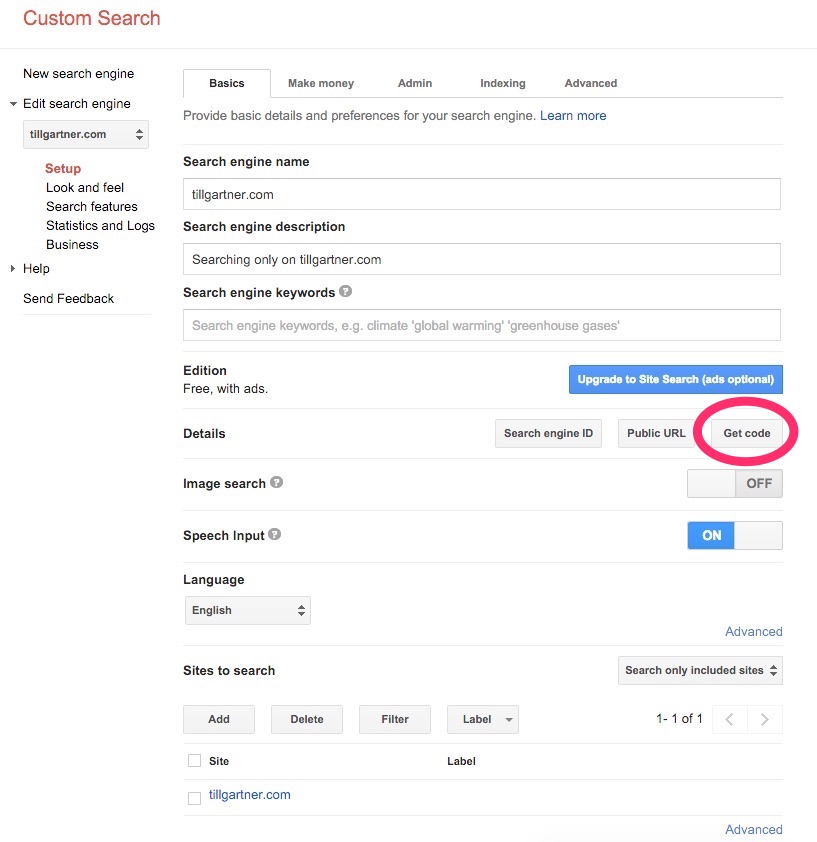
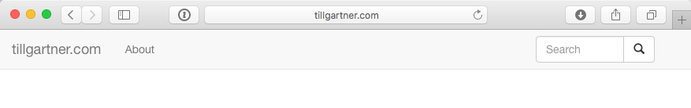

Ajouter une recherche à un site statique
J'ai maintenant un site statique généré par jBake. Jusqu'ici tout va bien. Mais qu'est-ce qu'un site sans recherche ? La recherche est indispensable. Alors, comment ajouter une fonctionnalité de recherche à un site statique ? Facile : nous utilisons la fonctionnalité de recherche personnalisée des géants de la recherche ;)
Voici les étapes que j'ai suivies pour y parvenir :
Créer le moteur de recherche personnalisé
Rien de plus simple : il suffit d'aller sur la page Google CSE et de le créer. Le processus est explicite : vous avez besoin d'un nom pour votre moteur de recherche, vous indiquez quel contenu doit être rendu disponible. Dans mon cas, il s'agit de tout le contenu de tillgartner.com et c'est à peu près tout. Nous reviendrons à la fin sur ce site pour affiner l'apparence et le ressenti des résultats.

La seule chose dont nous avons besoin ici est le code pour intégrer la recherche. Vous obtenez ce code en cliquant sur le bouton "Obtenir le code".
Ajouter le champ de recherche
Ensuite, nous avons besoin d'une boîte de recherche sur nos pages. Je veux une boîte de recherche en haut à droite de chaque page de l'ensemble du site. Je l'ajoute donc au modèle Freemarker qui crée le menu.
Dans mon cas, le menu.ftl ressemble à ceci :
<!-- Barre de navigation fixe -->
<nav class="navbar navbar-default navbar-fixed-top" role="navigation">
<div class="container-fluid">
<div class="navbar-header">
<button type="button" class="navbar-toggle" data-toggle="collapse" data-target=".navbar-collapse">
<span class="sr-only">Basculer la navigation</span>
<span class="icon-bar"></span>
<span class="icon-bar"></span>
<span class="icon-bar"></span>
</button>
<a class="navbar-brand" href="/">tillgartner.com</a>
</div>
<div class="navbar-collapse collapse">
<ul class="nav navbar-nav">
<li><a href="/recipe/recipe.html">Recettes</a></li>
<li><a href="/about.html">À propos</a></li>
</ul>
<div class="col-sm-3 col-md-3 pull-right">
<form class="navbar-form" role="search" action="/search.html">
<div class="input-group">
<input type="text" class="form-control" placeholder="Recherche" name="q">
<div class="input-group-btn">
<button class="btn btn-default" type="submit">
<i class="glyphicon glyphicon-search"></i>
</button>
</div>
</div>
</form>
</div>
</div><!--/.nav-collapse -->
</div>
</nav>
<div class="container">
Note : J'ai corrigé le code sur mon site et dans le code ci-dessus le 29.12.2015. Le code pour le bouton qui apparaît lorsque la largeur de l'écran fait s'effondrer le menu, manquait. Au cas où vous auriez lu ceci plus tôt et vous vous demandez pourquoi c'est différent maintenant...
J'ai trouvé que la partie du menu et comment il s'effondre n'était pas triviale. La meilleure explication que j'ai trouvée était cette vidéo.
C'est le menu standard de Bootstrap. Ce qui est spécial dans notre cas, c'est l'attribut action dans le formulaire qui renvoie à la page de résultats de recherche (appelée search.html dans mon cas).
Le résultat est une petite boîte de recherche en haut à droite :

Page des résultats de recherche
Enfin, nous avons besoin de la page des résultats de recherche. Cette page sera appelée (c'est-à-dire liée) depuis le formulaire de recherche que nous venons de créer. Son URL sera quelque chose comme
http://tillgartner.com/search.html?q=huhu
Dans mon cas, la page des résultats de recherche ne contiendra que le résultat de la recherche. Si l'utilisateur souhaite modifier sa recherche, il dispose toujours de la boîte de recherche omniprésente en haut à droite. La page des résultats de recherche contiendra le code que nous avons copié lors de la configuration du moteur de recherche personnalisé. Dans mon cas, l'ensemble du fichier Markdown ressemble à ceci :
title=Recherche
type=page
date=2015-12-17
status=published
~~~~~~
<script>
(function() {
var cx = 'XXX_Your_code:goes_here_XXX';
var gcse = document.createElement('script');
gcse.type = 'text/javascript';
gcse.async = true;
gcse.src = (document.location.protocol == 'https:' ? 'https:' : 'http:') +
'//www.google.com/cse/cse.js?cx=' + cx;
var s = document.getElementsByTagName('script')[0];
s.parentNode.insertBefore(gcse, s);
})();
</script>
<div markdown = "0"><gcse:searchresults-only>Résultats de recherche...</gcse:searchresults-only></div>
Il m'a fallu un certain temps pour comprendre comment dire à Markdown que c'est du pur HTML et qu'il doit le prendre tel quel sans le transformer ou le citer. La solution était la balise <div markdown="0">.
Ressources
Quelques lectures qui m'ont aidé à trouver mon chemin :
- Créez votre propre moteur de recherche
- Comment intégrer une fenêtre de recherche personnalisée Google dans une barre de navigation Bootstrap
- Implémentation de la boîte de recherche, par Google